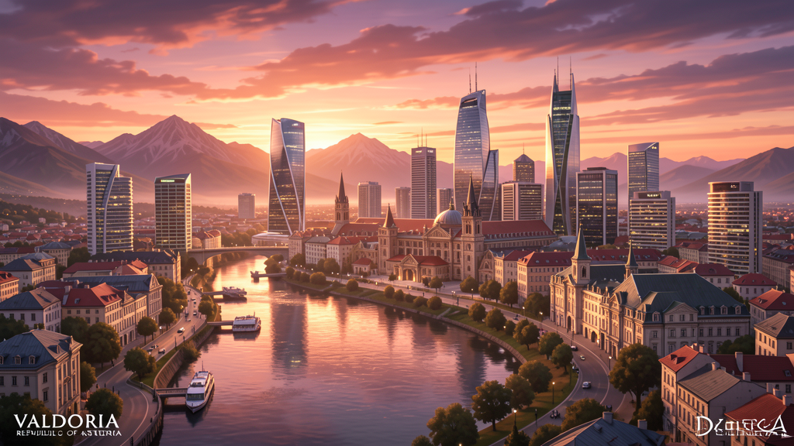

Bienvenidos a Asteria
Un país donde las montañas besan el mar y la luz del saber ilumina cada rincón. Explora las páginas y descubre una nación construida con historia, naturaleza y progreso.

Un país donde las montañas besan el mar y la luz del saber ilumina cada rincón. Explora las páginas y descubre una nación construida con historia, naturaleza y progreso.
